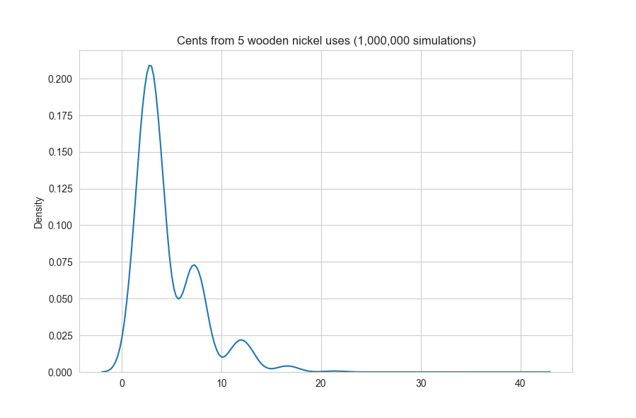

In the past year, I have had a lot of opportunities to work on some really fun projects, both small and large. Check out some of my favorite personal projects below.
This is my favorite, largest, and longest running project - my first homelab! As the story goes, my roommate liked to use his old gaming PC as a "living room computer" to be connected to the TV for watching YouTube, googling, etc. When we moved in together, he let me know about his failed attempts to get a Jellyfin Media Server running and asked me if I might know how to do something like that. I had NO idea how to do ANYTHING like that, but I took it upon myself to try. After installing Ubuntu and a few long nights of browsing old forum posts and banging my head against our crappy Logitech K400, we had a Jellyfin server! But now I need something called a reverse proxy? And TLS certs? And a domain? And DNS records? And more services? Long story short, I learned it all, and it has been a great experience. Here are some of the current services:
Some of my future aspirations include moving the homelab to a Proxmox High Availability Cluster hosted on a few mini PCs on a server rack, getting enough smart home equipment to justify using Home Assistant, running all of my services via Docker containers deployed via Docker Compose, and documenting everything on my GitHub.
It turns out I have some really smart and talented friends. One of which made his own 8x8x8 grid of LEDs, controllable via Python scripts. It is visually similar to the one shown in this video, if you'd like a visual aid. I was really fascinated by the project, so I asked (forced) him to explain how he interfaces with it. Using that knowledge, I put together a suite of scripts for him to run on it, including a 3D snake game, 3D pong, and Bad Apple!! in full 8x8 glory. To test my work, I used ChatGPT to help build me a renderer using OpenGL. With the help of this renderer, I'm proud to say that all of my code worked FIRST TRY when we actually got a chance to test it out on the hardware.
Find the source code for both the OpenGL renderer and Python scripts here.
One day, while playing The Binding of Isaac, I ran into a sequence of favorable events that was almost unbelievable. I couldn't sleep at night without having some idea of the odds of what happened. So, with the slightest bit of stastistics knowledge under my belt from my stats class that had started a few weeks prior, I constructed a statistical model of the event, and predicted that I could expect an outcome as favorable or more favorable than mine approximately 1 in 1,409,244 tries. Pretty lucky!
Find the source code for both the statistical analysis and a simulator here.
Please enjoy a graph of the probability density of 1,000,000 attempts. For context, my luck landed me at 36 on the x-axis out of a technical maximum of 50.
